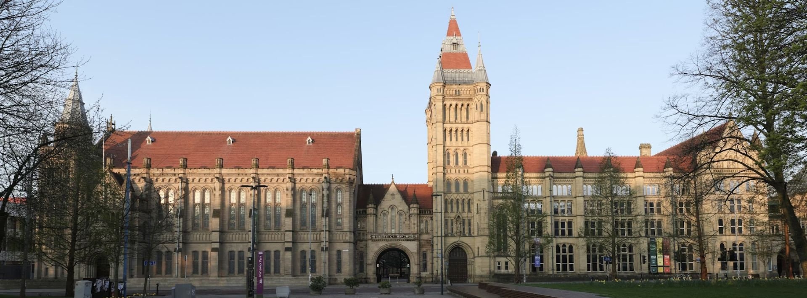

DH & RSE Summer School 2026

The 2026 Summer School will take place in Manchester from Monday 29 June to Thursday 2 July. Registration is free. Below you will find details on the Summer School, how to apply, and information about bursaries to support travel and subsistence for those who would otherwise be unable to attend.
About the 2026 Summer School
The DH & RSE Summer School 2026 takes place at the University of Manchester. It combines talks and practical activities and will explore how the intersection of digital humanities and software engineering happens in different UK institutions. Participants will gain an invaluable insight into the roles and practices of Research Software Engineering in Digital Humanities research.
Partner institutions will take turns in showcasing the practicalities of working in the field. Sessions will consist of hands-on workshops spanning matters such as foundational technical practices, high performance computing, data visualisation, sustainable digital research and AI coding tools. Most days will include talks and discussions but our emphasis is on learning-by-doing. Networking opportunities are built into the day during breaks and in the evenings (optional).
What is Research Software Engineering for Digital Humanities?
Research Software Engineering (RSE) in the humanities combines technical expertise with scholarly research to create, maintain, and refine digital tools for disciplines such as history, literature, linguistics, archaeology, art history, musicology, and cultural heritage. RSE enables text and image analysis, digital archives, data visualization, AI-driven research and more, while addressing the unique complexities of humanities data.
RSE can also involve collaboration across roles and disciplines, project and product management, and increasingly the adoption of high-performance computing (HPC) to handle complex analyses and large datasets. AI coding tools are also reshaping how RSEs work, offering new ways to prototype, document and develop software but raising important critical questions. Sustainability remains key to good RSE: planning, maintaining and sharing software, so that digital research outputs remain usable and understandable over time.
Who is it for?
The Summer School is for those who are interested in applying Research Software Engineering (RSE) practices in a current or future role. This event is for you if you have been studying or working in Digital Humanities for a few years and wish to engage with RSE practices more deeply in your work, or if you would benefit from networking and support in moving into roles where RSE practices are more central.
We welcome applications from postgraduate students (e.g. PhDs, masters with a research element), researchers, academics, curators, technical professionals and similar roles in education, research and cultural heritage collections. You may work in the humanities, allied disciplines or related sectors, such as museums and libraries — though we primarily focus on Digital Humanities case studies and networking opportunities.
You certainly do not need to identify as a Research Software Engineer to attend. In previous years our attendees have had a wide variety of backgrounds and experience, and this diversity has made for an enriching and collaborative teaching environment.
It is essential that you already have a few years of experience in coding – we do not teach coding – but you do not need a background in computer science. In fact, those with a computer science background or those already working as RSEs for some time are likely to find much of the material too introductory. Ideally, you will be familiar with some computational methods within humanities projects from study or in your current role. You must bring your own laptop.
Where is it?
The 2026 Summer School will be held at the University of Manchester, United Kingdom, in the centre of the city. There is a range of accommodation nearby and a large variety of places to eat.
View the venue guide
Outline schedule
This is our planned schedule for the four days (please note that we may have to make changes). A more detailed timetable will be available in advance of the Summer School.
| Monday 29 | Tuesday 30 | Wednesday 1 | Thursday 2 |
|---|---|---|---|
| Introduction to Research Software Engineering in DH | Introduction to High Performance Computing for DH | Version Control for Digital Humanists | Data Visualisation in Practice |
| Digital Humanities at the Command Line | Introduction to High Performance Computing for DH | Sustainable Software Practices | Working Critically with AI Coding Tools |
Session overviews
Introduction to Research Software Engineering in Digital Humanities
In this session we introduce the high-level concepts of the Software Development Life Cycle, in order to provide a firm context for the rest of the week. Understanding the Software Development Life Cycle (SDLC) is an essential skill for managing digital humanities (DH) projects effectively, or indeed, any digital project. The SDLC provides a structured framework that guides the development process from initial conception through development to deployment and maintenance. By adopting a systematic approach, researchers and research software engineers can ensure that project objectives are clearly defined, resources are efficiently allocated, and potential risks are identified and mitigated early on. This methodology enhances the quality and sustainability of digital outputs and fosters better collaboration among interdisciplinary teams. Incorporating SDLC practices into DH projects leads to more robust, maintainable, and impactful research outcomes.
We will also hear from speakers who use RSE in their DH roles and discuss the many shapes RSE can take for DH in a careers panel.
Digital Humanities at the Command Line
Learning the command line is a foundational skill for research software engineering practices. The command line is a versatile interface that allows users to interact directly with their computer, providing capabilities that often go beyond what is possible with graphical interfaces. It can simplify tasks such as managing large collections of files, processing textual data, or automating repetitive actions. It also provides access to advanced tools for analysis, version control, and data processing, as well as enabling the use of high-performance computing (HPC) resources for tackling large-scale or computationally intensive research questions. Using the command line fosters efficiency, opens up new possibilities for working with data, and equips users with skills that enhance collaboration and reproducibility in digital humanities projects. We hope to demonstrate that command line skills and confidence are useful in a wide variety of scenarios.
Introduction to High Performance Computing for Digital Humanities
High-performance computing (HPC) provides researchers and research software engineers with the computational power needed to process large datasets, perform complex analyses, and process extensive collections of texts or images. In digital humanities, HPC is particularly useful for tasks such as natural language processing, machine learning, or working with digital archives that exceed the capacity of standard personal computers. Learning to use HPC resources is increasingly important for handling computationally intensive methods, collaborating on large-scale projects, and efficiently addressing research questions that require significant processing capabilities.
We will explore the core principles behind HPC, including how CPUs and GPUs handle tasks differently, when large-scale computing might be needed, how job scheduling and resource management is different on a cluster than a laptop, and when to optimise code for better performance. We’ll discuss when digital humanists may benefit from these methods—and when your laptop is enough. With hands-on labs, we'll cover the practical aspects of using high-performance computers, giving a basic overview of the tools available and how to use them. We will build on the theoretical principles to see how working with CPUs, GPUs and large datasets can be managed in practice. Participants will learn how to access HPC resources, navigate the command-line environment, and submit and manage jobs.
Version Control for Digital Humanists
Version control is a foundational skill for collaborative and sustainable research software engineering. A version control system such as Git allows researchers to track changes to code, data, and other project files over time, providing a clear and recoverable history of how a project has evolved. It enables safe experimentation by making it straightforward to try new approaches without risking existing work, and supports collaboration by allowing multiple contributors to work on the same project without overwriting each other's changes. Version control also underpins open research practices: publishing code in a repository makes work transparent, reproducible, and easier for others to build upon. For digital humanities projects, where research outputs often include bespoke scripts, data transformations, and evolving documentation, these habits are especially valuable. We hope to demonstrate that version control is an essential part of a collaborative digital research practice.
We will have two tracks: one for beginners who have not used git before, and an intermediate track for those with some experience who are looking to learn more.
Sustainable Software Practices
This course equips researchers and developers with the skills to build sustainable, FAIR research software. By the end, participants will be able to explain the principles of open and reproducible research and apply them to software development; assess software for maintainability and reuse; and implement professional workflows for version control, environment management, and collaboration. The course also covers designing modular software, building in testing and documentation, and evaluating projects for openness and sustainability and aims to give participants a well-rounded toolkit for developing software that is built to last and built to share.
Data Visualisation in Practice
This hands-on workshop will introduce participants to core principles and practices of data visualization (VIS) in the digital humanities (DH), combining short conceptual inputs with extended practical work. It will begin with a brief introduction to visualization methods, followed by an exploration of an historical dataset from the University of Edinburgh [medical students 1760–1920], highlighting challenges of working with complex humanities data. The majority of the session will be dedicated to guided, hands-on development using web-based tools such as D3.js, enabling participants to create their own interactive visualisations. The workshop will conclude with a practical introduction to deploying projects via GitHub Pages. No advanced expertise is required, but some familiarity with web technologies or programming will be beneficial.
Working Critically with AI Coding Tools
AI coding tools are rapidly changing what it means to write software, shifting the emphasis from knowing syntax to directing computation with natural language. This raises profound questions for research software engineering: what happens to foundational coding knowledge if new practitioners never learn the hard way? Can you trust and understand code you did not fully write yourself, and does it matter for research integrity? What hidden inequalities might there be in take up of these tools? This session addresses these questions, examining where AI coding agents offer potential benefits such as rapidly prototyping ideas, setting up routine code, generating documentation, acting as an on-demand tutor, and more. We will also discuss where they introduce risks, particularly around understanding, trust, and the long-term health of the RSE community.
In the practical, we'll bring together skills from across the week to work hands-on with AI coding tools, evaluating their outputs critically. Exercises will draw on the command line, version control, sustainable coding practices, data visualisation and testing to finish the week with a capstone.
Bursaries
Thanks to the support of Strategic TEchnical Platform for University Technical Professionals (STEP-UP), we are able to offer a limited number of bursaries to support participants who would not otherwise be able to attend the Summer School.
Support is available up to a maximum amount per participant of £650. All costs must be supported with receipts in order to be reimbursed. If a partial award would still enable you to attend, please state this on the application form.
Bursaries will be allocated to accepted applicants based on the following priorities:
- Applicants who will not receive financial support from their own institutions to cover the costs for which they are applying.
- Applicants who identify as belonging to an under-represented group in software engineering or data science in the UK.
If the number of bursary applications that meet our criteria exceeds the number of bursaries available, we will award them based on how well the applications align with our target audience (see the Intended Audience section above).
Allowable expenses include UK travel, accommodation and substistence and additional expenses incurred in order to attend the Summer School. Such additional expenses may include:
- Paid carers (e.g. childcare or eldercare, over and above your normal arrangements)
- Reasonable costs of informal care (e.g. travel costs for a family member to provide care usually provided by the attendee)
- Reasonable costs related to disability or medical conditions (e.g. travel costs for a carer or assistance, equipment, etc.)
The expenses listed above are not exhaustive and you are welcome to discuss in advance any expenses of which you are unsure. Please contact us on [SSI email address to go here].
Ineligible expenses are travel for attendees arriving from outside of the UK and Visa costs. We cannot cover expenses of these types.
Key Dates
| Monday 23 March 2026 | Applications open |
| Tuesday 14 April 2026 | Application deadline |
| Tuesday 5 May 2026 | Attendees and bursary holders notified |
| Monday 29 June – Thursday 2 July 2026 | Summer School takes place |
How to apply
Thanks to the support of the Digital Skills in Arts and Humanities (DISKAH), participation is free for those who are offered a place. That is, there is no fee to attend the Summer School, but those without bursaries will need to fund their own travel and accommodation.
We have a limited number of places. Candidates will be assessed on the quality of their application and how well they align with our target audience (see above on our intended audience).
To apply, fill in the application form.
The application form has three questions about your work and/or study, your experience and your interests. You will be asked to respond to each of these three questions with a paragraph of text.
- Please tell us about your current role, course of study or research project. How do you use code and/or data in your work or study? What are the topics, challenges or research questions that you are engaged with?
- Please describe how one or more specific topics at the Summer School 2026 will help you in your work, study, research or career aspirations. What do you hope to get out of attending?
- What skills or experiences will you bring to the Summer School to share with others? Your list can include both technical and non-technical examples.
EDI
We are committed to equity, diversity and inclusion and are keen to attract a diverse applicant pool. We strongly welcome applications from under-represented groups in software engineering and data science in the UK.
Please contact us directly on dh-rse@manchester.ac.uk if you would like to discuss any accessibility requirements for your application or application process.
Code of conduct
We are committed to creating a friendly and respectful place for learning, teaching and contributing for all. All participants are expected to adhere to our Code of Conduct.